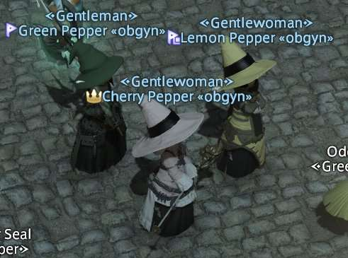

Hello! My name is Eden! I'm a mostly introverted person, but if you get me onto a topic I know a lot
about, or
get me into a one-on-one conversation, I can talk your ear off!
I'm always up to try any activity, I really enjoy trying and learning new things. Jack of all trades, master of
few.
I'm always listening to music, I definitely have some go-to music but I'm open to suggestions from any and all
genres.
I enjoy being creative, with art, with fashion, with cooking.
I love my little family, my partner and I are new house owners and we are remodeling our home by ourselves, it's
been a big project, and a great learning experience. Our two cats; Pumpkin Pie McSassypants, and Monterey
Jack the
Third, often try to help us with the remodel, they're an essential part of the team.
That's me! Eden. The Author.Happy Pumpkin KittyA good Jack
Education History
My education history is a bit all over the place!
Growing up my family has monetary issues,
so I
dropped out of
highschool at an early age to get a job and help provide, food, bills, mental stability.
As I
approached
adulthood, I had already had a number of jobs within various fields of retail. I decided that maybe I did want
to
pursue further education.
I got my GED and started to attend community college, I jumped around a few
ideas,
culinary arts, welding, but eventually decided that I really valued "life" as a whole and wanted to understand
the
science behind it.
With this in mind I transfered to the University of Washington for Biological
sciences and
obtained my Bachelor's degree.
Schools and Certificates
Bellevue College: GED
Bellevue College: Direct Transfer Associates
University of Washington: Bachelor's of Science; Molecular Cellular and Developmental Biology
Job Experience
As mentioned previously I have a pretty diverse job experience!
Early in life, I started with department store jobs at places like Walgreens, and Target.
I then progressed to more specialized retail in Grease Monkey where I worked mostly customer service and front
desk, JoAnn Fabrics, where I found my love of all things craft, and finally PetSmart where I worked in
the
Salon as a dog bather best clients ever.
I even dabbled in the food industry working at Pizza hut
as a delivery driver, and my store being one of the rare Pizza Huts that had indoor dining, as a waitress.
During my time in school I found a passion for mathematics and the logic behind it, a skill I never knew I had
due
to my previous (lack of) education! My math professor suggested that I become a math tutor and I obliged!
I found great passion in teaching and helping others. I remained a tutor and teachers assistant through the
remainder of my education.
Finally after I finished my education I worked at the University of Washington School of Medicine as a Lab
Manager
for the Hyde Lab, a virology lab that studies Venezuelan Equine Encephalitis Virus (VEEV).
This is the job I was at when the Pandemic hit, and since our VEEV virus was a single stranded positive sense
RNA
virus, just like SARS-CoV-2 is, I was able to pick up work with COVID With our goal being to help to
understand it's pathogenesis and contibute data towards the vaccine development.
Places of Employment, a List
Walgreens:Customer Service
Target:Flow
JoAnn Fabrics:Fabrics/Framing
Pizza Hut:Driver
PetSmart:Bather
Bellevue College:Tutor
University of Washington:Tutor
UW School of Medicine: Lab Manager
Life Goals
My main and Ultimate goal in life is to be happy!
On top of that a big goal for me is the proud of what I have accomplished and the work that I do.
In terms of a career I want to learn these software developer skills and apply it back to my career in virology.
I
didn't leave science because I was unhappy, but instead that I wanted to learn more skills to help the
field.
During my time in the lab we had a very kind developer write some simple code that allowed us to analyze viral
RNA
structure and how changing individual nucleotides contributed to the pathogenesis of that virus. Through
cloning
techniques we were able to show that just a SiNGLE nucleotide change in the 3'UTR (3 prime Untranslated
region) drastically changed the pathology of VEEV.
Seeing just how easy this very simple code made this process, that before took us days to do, really sparked my
motivation to seek out these new skills. I'm very excited to pursue this field and to make connections with my
peers.
Eden's Top 10 Favorite Video Games
Final Fantasy 14: A Realm Reborn
Silent Hill 2(and 1 and 3)
Legend of Zelda (Any and all Installments but Majora's Mask is favorite)
Kingdom Hearts(Series)
Animal Crossing(Series)
To the Moon
Ori and the Will of the Wisps
Hollow Knight
Undertale
Overwatch (Except blizzard is a bad company)

Picture of Some Peppers in FFXIV by Square Enix